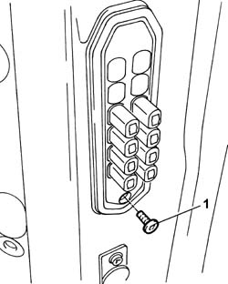
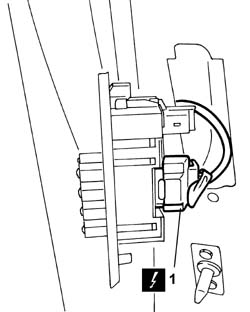
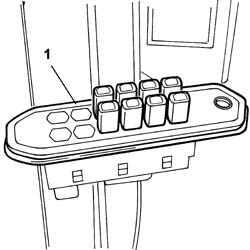
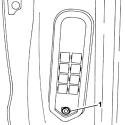
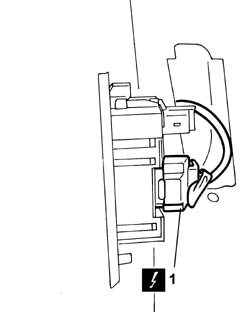
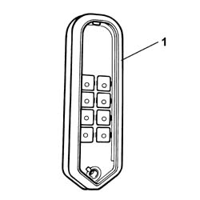

5505A22 SLIDING SIDE DOOR CONTACT MOUNT, L.H. OR R.H. (ONE) R R
- Path
- Procedures > 55 ELECTRICAL EQUIPMENT > 5505 INSTRUMENT/GAUGE ELECTRICAL CIRCUITS > 5505A MULTI-FUNCTION COMPONENTS > 5505A22 SLIDING SIDE DOOR CONTACT MOUNT, L.H. OR R.H. (ONE) R R
- Kind
- repair procedure (removal / refitting; the operation number is the code)
- Applies to
- all engines; all production periods
- Interactive page
- https://sloeber94.github.io/elrnDB-fUlss/en/#/179007520
Applies to: all engines; all production periods
 Removing
Removing
 Refitting
Refitting- Completely lower the sliding side door descending window glass.
Op. 5530B56 BATTERY DRIP TRAY COVER - R.R.
- Disconnect the negative battery terminal.
1. Undo the bolt fixing the sliding contact support to the sliding side door.

Applies to: all engines; all production periods
- Extract the sliding contacts support.
1. Disconnect the electrical connection.

Applies to: all engines; all production periods
1. Remove the sliding contact support for the sliding side door.

Applies to: all engines; all production periods
1. Undo the bolt fixing the sliding contact support to the centre pillar.

Applies to: all engines; all production periods
- Extract the sliding contacts support.
1. Disconnect the connection.

Applies to: all engines; all production periods
1. Remove the sliding contacts support for the centre pillar.

Applies to: all engines; all production periods
Refitting
Removing- Connect the electrical connection.
- Position the sliding contacts support on the centre pillar.
- Tighten the fixing bolt.
- Connect the connection.
- Position the sliding contact support on the sliding side door.
- Tighten the fixing bolt.
- Connect the negative battery terminal.